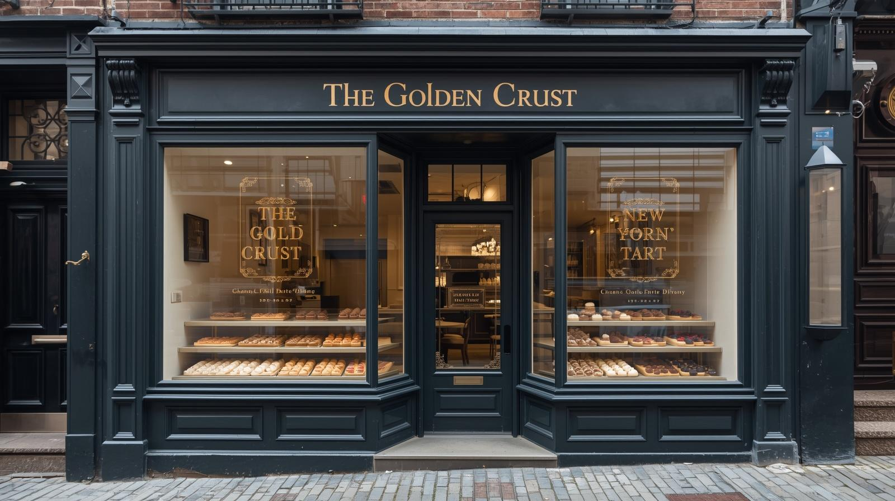

Welcome to The Golden Crust
At The Golden Crust, we focus on one thing: making really good mini tarts. Our menu brings together two styles we love: classic Cantonese flavors with their light, delicate textures and New York inspired tarts that highlight seasonal produce and bold ingredients.
Everything is baked in small batches throughout the day, so the crust stays crisp and the fillings taste fresh. It’s simple, careful baking meant to highlight each flavor on its own.

Today’s Tart Availability
Our flavor selection stays consistent throughout the week, with one seasonal flavor that rotates from time to time. Each morning we bake a limited quantity of every tart for online orders and prepare a small number of extra tarts for in‑store customers on a first come, first served basis. The available quantity for each flavor is shown directly on the order page so customers can see what is available for the day and place their order for same‑day pickup.
Ordering Made Simple
Order individual tarts or choose from our curated boxes, all packaged for quick and easy pickup. Online ordering closes once we reach our daily baking limit to ensure quality stays consistent.
Planning for a group? Our catering boxes are prepared in advance and offer a reliable option for meetings, events, and celebrations.
Crafted With Care
We take a straightforward approach to baking: good ingredients, solid technique, and attention to detail. From flaky crusts to smooth custards, every tart is made to be consistent and enjoyable.
Whether you’re stopping in for a quick treat or picking up a box to share, we hope our tarts feel thoughtful, comforting, and worth coming back for.